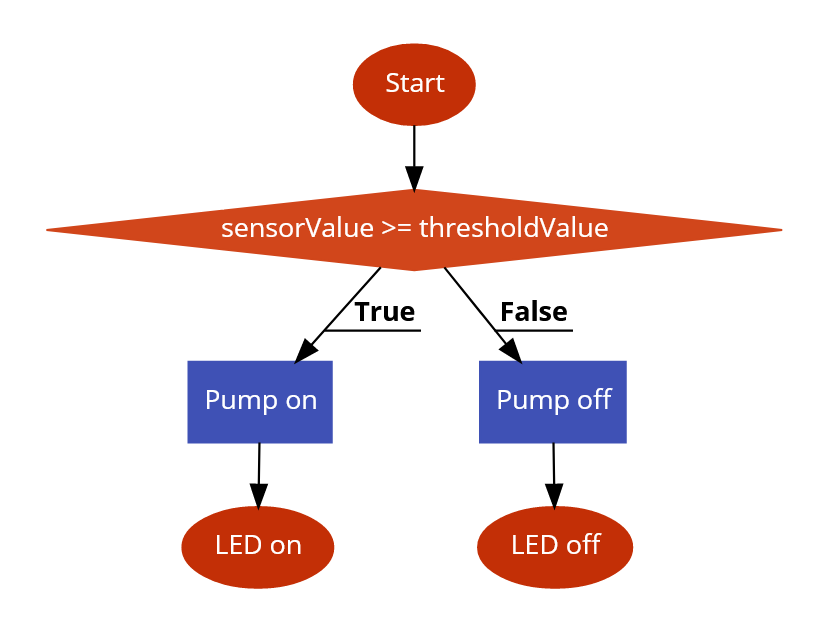
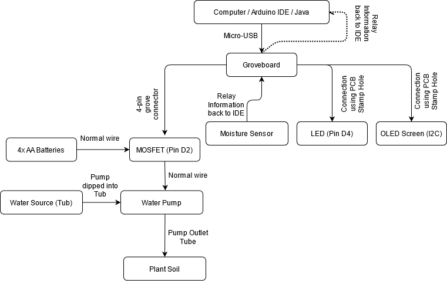

About the project
India is a country of 1.3 billion people, spread out over rural and urban areas. While the urbanized areas enjoy relatively decent-to-good health services, the rural regions of India often lack even simple healthcare services, one of which is the NICU. Level I NICU's use simple sensors like temperature sensors, photosensitive sensors and heartbeat monitors, combined with other complex systems like resuscitation and stabilization setups. In this project an attempt is made to try and emulate a basic Level I NICU, using simple sensors available on the Arduino SEEED Groveboard.
One of the most important parts of a NICU is the incubator, an apparatus used to maintain environmental conditions suitable for a newborn baby. Used in preterm births or for some ill full-term babies. Usually an incubator includes multiple features, not limited to but consisting of: Blood pressure monitoring equipment, oxygen hood, and a ventilator. These three features are not included in this much simpler mockup of a Level I NICU.
 The automatic part of the system is explained in the simple flowchart here. Simply, when the detected sensorValue exceeds or matches a preset thresholdValue, the pump automatically turns on. Once the soil moisture stabilizes and exceeds the thresholdValue the pump turns off. When the pump turns on, an LED light on the Arduino Groveboard also lights up to signal the pump is in operation.
Additionally, the manual part of the system is explained in the simple flowchart here as well. Once again, simply, when the button to turn the pump on is pressed, the pump turns on, while when the button is not pressed, the pump turns off. Like with the automated side, when the pump is in operation, a LED light on the Arduino Groveboard lights up to signal the pump is in operation.
 This project taught me basics of coding in Arduino and Java, as well as how to tinker with a Groveboard (Arduino board), how to integrate software and hardware to produce something that has usability in the real world. A more complex diagram of the overall system is provided as well.

{kind=link}
{kind=link}
{kind=link}
{kind=link}